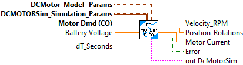

Single call LabVIEW function to simulate a DC Motor system. This simulates both velocity and position.
The linear system for this is:
- States
-- angular position
--, angular velocity
- Inputs
-- voltage
- Outputs
-- angular position
-- angular velocity
Inputs:
- DCMotor Model Params -- cluster -- Contains physical configuration for DC Motor system.
- DCMotor Sim Simulation Params -- cluster -- Contains siulation configuration.
- Motor Dmd (CO) -- double -- motor demand value (+/- 1.0 )
- Battery Voltage -- double -- Current simulated battery voltage (Volts)
- dT Sec -- double -- Update period (Seconds, Default: 0.02)
Outputs:
- Velocity -- double -- Current motor velocity (RPM)
- Position -- double -- Current motor position (Rotations)
- Motor Current -- double -- Current motor current (Amps)
- Error -- boolean -- If TRUE an error occured.
- outDCMotorSim -- cluster -- Current internal data cluster.